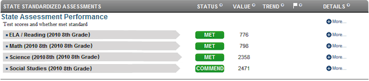
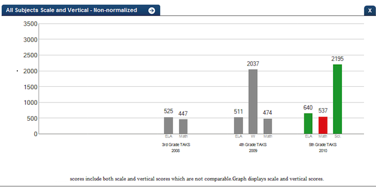
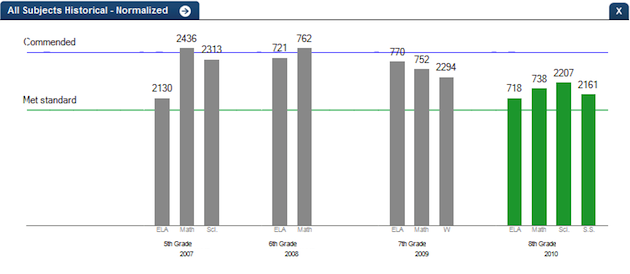
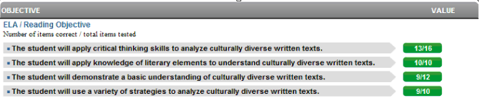

Dashboard Metrics


State Assessment Performance
Background
Student Dashboard Metrics
Whether or not one believes standardized test performance is indicative of each student’s preparedness for postsecondary education and the workforce, every performance management dashboard must include state accountability test results due to their high-stakes nature for individual students as well as schools. Reinforcing this, in focus groups conducted with educators, standardized test performance was consistently named as one of three top student data needs. Similarly, the state assessment Performance metric, as presented in screen shots of the student dashboard, was considered useful by 98% of those surveyed. In particular, educators valued having historical and detailed standardized test data in one place.
Although examinations vary by state, the general principles applied in the student dashboard and data model for standardized test performance would be applicable to any state.
Primary Metric
- State assessment Performance: reports historical, detailed and trend data on a student’s state assessment performance in all tested subjects: reading/ELA, writing, mathematics, science and social studies at the applicable grade levels. Performance on alternative tests, including those for special education and Limited English Proficient students, is also reported.
Related Metrics
- State Growth Measure: whether or not the student has made one year of growth in standardized test (state assessment) performance, with trend, historical and detailed data.
- State Projection Measure TPM: whether or not the student is projected to meet standards at the fifth, eighth or 11th grades in the four core subjects (ELA, math, science and social studies) and at seventh grade in writing, as applicable based on the student’s current grade level. Developed based on national growth models used in AYP calculations, the TPM provides a projected scale score at a future grade based on a student’s most recent state assessment scale score and the most recent average scale scores for students attending the same campus.
- Advanced Course Potential - Current Year: for the current year only , whether or not a student has demonstrated potential for advanced coursework based on state assessments (PSAT® (if taken, performance at greater than or equal to 80th percentile) and state assessment commended score at or above 2400) and whether or not they are enrolled in advanced courses (AP, IB or DE courses) in the four core subject areas.
User Interface
Dashboard Example
Figure 1 shows the state assessment Performance metric as shown on the student dashboard.

Figure 1 Ed-Fi state assessment Performance Metric
Status Definition
The Status column displays whether or not a student achieved a cut score that indicates an acceptable level of performance.
Table 2 lists the status indicators and trend comparisons as seen on the student dashboard.
Metric Indicator | Trend Comparisons | |||
Metric Name | Sub-metric Name | Metric Status Indicator | Compares: | To: |
State Assessment Performance | ELA/Reading | Red (Below) = if state assessment score is below the minimum score Green (Met) = if state assessment score is at or above the minimum score | Current year's grade level test result | Prior year's grade level test result |
Writing | Red (Below) = if state assessment score is below the minimum score Green (Met) = if state assessment score is at or above the minimum score | Current year's grade level test result | Prior year's grade level test result | |
Mathematics | Red (Below) = if state assessment score is below the minimum score Green (Met) = if state assessment score is at or above the minimum score | Current year's grade level test result | Last grade level that the subject test was taken | |
Science | Red (Below) = if state assessment score is below the minimum score Green (Met) = if state assessment score is at or above the minimum score | Current year's grade level test result | Last grade level that the subject test was taken | |
Social Studies | Red (Below) = if state assessment score is below the minimum score Green (Met) = if state assessment score is at or above the minimum score | Current year's grade level test result | Last grade level that the subject test was taken | |
Trend Definition
Table 3 lists the trend indicators for the state assessment Performance metric.
Trend Indicators: Objective is to indicate state assessment performance | |||
| Up green | If the value for the current assessment is 50 points or greater than the previous assessment score | |
| Unchanged | If the value for the current assessment is between 0 and 49 points greater or less than previous assessment score | |
| Down red | If the value for the current assessment score is 50 points or more less than the previous assessment | |
Periodicity
Recommended Load Characteristics | |
Calendar | Throughout the school year |
Frequency of data load | March, May and October |
Latency | Yearly |
Interchange schema | Interchange-StudentAssessment.xsd |
Tooltips
The standard tool tips for the metric definition, column headers, and help functions display for this metric.
The following are tooltips specific to the state assessment Performance metric:
 is ‘No change from the prior period'
is ‘No change from the prior period' is ‘Getting worse from the prior period’
is ‘Getting worse from the prior period’ is 'Getting better from the prior period'
is 'Getting better from the prior period'
Business Rules
The State Assessment Performance metric displays the student’s state assessment performance during the current school year by the subject areas tested for that year (see Table 5). The metric displays results for assessments in the following subject areas:
- English Language Arts/Reading
- Writing
- Mathematics
- Science
- Social Studies (Middle School and High School)
If the student took an alternate version of the state assessment, the metric is displayed for each state assessment test version by subject area, as follows:
- State assessment-S is the standard state assessment test where the administration language is Spanish.
- State assessment-M is a special state assessment test for learning disabled students.
- State assessment-Alt is a special state assessment test for severely disabled students.
- LAT is the standard state assessment test with Linguistic accommodations.
This metric displays the last state assessment test taken by subject. For most of the school year, the values reflect the prior year's state assessment scores. When the current year state assessment test results are received and loaded, the display is updated.
If the student took the same state assessment test multiple times, the last score is displayed. Alternatively, a developer may also include prior test scores if there is interest in viewing repeat test-taking patterns.
Table 5 lists the state assessment subjects that are tested in each grade.
Student Grade Level | State assessment Test Subjects | ||||
|---|---|---|---|---|---|
| 3 | Reading | Mathematics | |||
| 4 | Reading | Writing | Mathematics | ||
| 5 | Reading | Mathematics | Science | ||
| 6 | Reading | Mathematics | |||
| 7 | Reading | Writing | Mathematics | ||
| 8 | Reading/ELA | Mathematics | Science | Social Studies | |
| 9 | Reading/ELA | Mathematics | |||
| 10 | ELA | Mathematics | Science | Social Studies | |
| Exit Level | ELA | Mathematics | Science | Social Studies | |
Data Assumptions
- Student state assessment scores by subject (ELA/Reading, Math, Science, Social Studies and Writing) are available for the appropriate grade level (as identified in Table 5).
- State-defined performance thresholds (e.g., “Met Standard” and “Commended”) are indicated in the state assessment results file.
- The type of the state assessment test is available per student (e.g., state assessment-M, state assessment-S, etc.).
- Student absence and reason for not taking a particular test are indicated in the state assessment results file.
- Historical test scores for each student are available in the test provider files for the current year. If these are not available, best practice is for a developer to obtain test files from prior years so that historical scores are included.
Computed Values
The student’s current grade level is used to identify the current year’s state assessment. If the current grade state assessment is not available, the prior grade level state assessment is displayed. For each subject taken in the current or prior years’ state assessment:
- Value column = student’s scale score for that subject’s state assessment
Data Anomalies
Anomalies
Best practice is to use footnotes to address these anomalies:
- Metrics are sensitive to when and how often the data is loaded.
- Late enrollees are likely to be missing previous assessment data.
Date of Refresh
Best practice is for the date of last data refresh to appear next the metric in the following format:
- (Through April 2010) - container level
- (2010 5th Grade state assessment) - granular level
.
Implementation Considerations
Student Identity
Maintaining a correct and consistent student identity is at the center of any education data system. Most systems use some sort of unique identifier. However, sometimes this identifier is entered incorrectly or sometimes different systems use different identifiers.
The UDM XML supports the interchange of multiple types of identifiers. The StudentReference is a complex type within the UDM to maintain the referential integrity of the student (that is, ensuring that the data associated with each student is accurately associated with the right student). The complex type of the student reference assists with implementing the accurate matching algorithm to identify a student by utilizing any of the individual attributes (e.g., Student Unique State ID, Student ID, Campus Local ID (with Campus ID), Name and Birth Date). For example, if the Student Unique State ID is unknown, you can find the student’s identity by their Student ID, First Name, Last Name and Birth Date.
Reporting Different Versions of State Assessment Tests
Best practice is for a developer to report each of the different test versions for students with special situations as separate metrics. A student may, in any single grade level, take different versions of a state assessment test for different subjects and these also should be distinguished so an educator can track progress of students.
Reporting Retakes of the Same State Assessment Test
Currently the metric reports the most recent result for a given state assessment test by type, grade level, and subject. Alternatively, developers may show results for each time a test is taken within a school year to see the progress a student has made.
State Assessment Non-Participation
Students who are scheduled to take an assessment, but are absent or exempt are reported in the assessment results files, along with the reason (e.g., absent, exempt for specific reason, etc.). Best practice is for developers to flag or footnote absent and exempt students in some manner.
Tying Test Results to Curriculum Standards
Interest has been expressed in having a next-level drill down from objectives to the student expectations level which tie to the curriculum standards. This requires a separate file of data and mapping of assessment items to student expectation. This data is not available until after the last state assessment administration for the year and must be specially obtained from the test provider (Pearson).
Changes in State Assessments
If states that are undergoing changes in assessment standards and/or tests, it may impact the way that current and longitudinal data is presented.
- Limited historical comparisons: The comparison of prior year’s state assessment scale scores cannot currently be rigidly interpreted because the mapping of raw scores to scale scores is not uniform from year to year. As vertical scores are available, this comparison becomes possible and can be incorporated into the metric visualizations.
- Updating of graphs and thresholds: With the transition from a defined scale score to the vertical score, the year-to-year performance thresholds set by the state will vary by subject and will increase from grade to grade. Historical visualizations of this information will take this into account.
State Assessment Test Scores
State Assessment has four types of test scores:
- raw scores - number of correct items
- scale scores - converts the raw score to a standard scale that accounts for different levels of difficulty in questions
- vertical scores - enables the comparison of a student's score in one grade with the student's score in the next grade for the same content area. Vertical scores are provided only for reading and math in grades 3 through 8.
- horizontal score - enables direct comparisons of performance across different test administrations within a grade and subject area, but not across grades or subjects. This score is used for grades 5 and 8 science, grades 4 and 7 writing, grade 8 social studies and all EOC assessments.
Assuming that cut scores (or guidance on cut scores) are available, Ed-Fi is able to test some level of reporting on state assessment during the final quarter of pilot testing. The first set of state assessment 3rd through 8th grade results may not be available until after the pilot period because performance standards will not be set until October 2012.
Ed-Fi plans to create an algorithm that enables a visual comparison between state assessment and state assessment data by using cut score thresholds.
State Assessment Standardized Test Scoring Levels
State assessment will have three performance levels: Level I: Unsatisfactory Academic Performance, Level II: Satisfactory Academic Performance, and Level III: Advanced Academic Performance.
On the dashboards, the detail views for scale, vertical and horizontal scores are graphed. To display these detail graphs properly, cut scores must be available.
Drill Downs
Drill Down Views
The dashboards include the option to see more detail that is associated with a specific metric. There are three recommended drill downs for this metric – a historical view of performance, a detailed graphical depiction of test scores, and a detailed depiction of performance at the objective and item level. Table 6 lists drill down views that are recommended for this metric.
| Academic Profile | Basic academic history of student data that gives educators access to a student's strengths and areas of improvement. (Future Implementation) | |
| Historical Non-normalized | State assessment performance history graph displays the subject area performance comparing the current year with the last three years of a student’s state assessment performance | |
| Historical Normalized | The state assessment performance historical Normalized view displays the current and historical scores against the met standard and commended standards/thresholds. |
Historical Non-normalized
Description
The state assessment performance history graph displays the subject area performance comparing the current year with the last three years of a student’s state assessment performance.
Data Mapping
The state assessment historical drill down does not require additional data mapping.
User Interface Notes
Dashboard Example
Figure 2 shows the drill down detail for the state assessment Performance Non-normalized data metric as shown on the student dashboard.

Figure 2 Ed-Fi State Assessment Non-normalized Data
Business Rules
The current and prior year state assessment scores (three years if available) are displayed in a bar chart.
- Bars are grouped by year, with the state assessment test subject appearing directly below the bar
- For each year, only the subjects taken in that year are shown
- Current year bars show either a green or red depending on whether the score meets the state-defined threshold
- Prior years bars are colored gray
- Trend arrows are shown above each bar for tests where a prior grade level’s score is available
- The state assessment score is shown above each bar, and above the trend arrows, if present
- Horizontal lines show the state-defined performance thresholds
Data Assumptions
- Three years of state assessment test scores are available for a student. If not, only those years that are available are shown with appropriate footnotes.
- If a prior year’s score is not available, the drill-down graph is not shown and a notation indicates that the data is missing.
Historical Normalized
Description
The state assessment performance historical Normalized view displays the current and historical scores against the met standard and commended standards/thresholds.
Data Mapping
The state assessment performance normalized does not require additional data mapping.
User Interface Notes
Dashboard Example
Figure 3 shows the Historical Normalized view for the state assessment Score detail metric as seen on the student dashboard.

Figure 3 Ed-Fi State Assessment Performance Normalized
Data Anomalies
Drill Down Footnotes
- Best practice is to include an indication that clicking on each of the bars displays state assessment objective-level scores.
Business Rules
The current year state assessment test scores display in a bar chart by state assessment subject taken within the current school year.
- The state assessment subject is shown below each bar
- The state assessment test score is shown above the bar
- Current year bars show either a green or red depending on whether the score meets the state-defined threshold
- Horizontal lines show the state-defined performance thresholds
- For Reading/ELA, the composition/writing score must be considered in the calculation.
Data Assumptions
- The student’s current state assessment test scores are available.
- If a prior year’s score is not available, the drill-down graph is not shown and a notation indicates that the data is missing.
State Assessment Objectives
Description
The state assessment Objectives drill down displays raw scores for each objective tested for each of the state assessment subjects shown in the state assessment Performance Normalized and Non-normalized graphs.
Data Mapping
Table 7 lists the additional data needed for the state assessment Objectives drill down and its mapping from the UDM to the Ed-Fi.
Data Driving the Metrics | UDM Path.Attribute (XML Type) | Ed-Fi Table.Field (Type) |
Objective Description | ||
Student => StudentTestAssessment => StudentObjectiveAssessment => ObjectiveAssessment => LearningObjective:ObjectiveDescription (text) | LearningObjective:ObjectiveDescription (nvarchar) | |
Objective Max Score | ||
Student => StudentTestAssessment => StudentObjectiveAssessment => ObjectiveAssessment:MaxRawScore (int) | ObjectiveAssessment:MaxRawScore (int) Inc | |
Student Objective Score | ||
Student => StudentTestAssessment:RawScoreResult (int) | StudentTestAssessment.RawScoreResult (int) | |
User Interface Notes
Dashboard Example
Figure 4 shows the drill down detail for the state assessment Objective metric as seen on the student dashboard.

Figure 4 Ed-Fi State Assessment Objective Detail
Business Rules
The objective level scores are listed for the selected state assessment subject assessment as seen on the mockup. For each objective, the following is displayed:
- Objective Title
- Student’s objective raw score
- Maximum raw score for the objective
- Red indicator if the percentage of items correct (student raw score/maximum raw score) is less than a specified (configurable) threshold
- Green indicator if the percentage items correct (student raw score/maximum raw score) is greater than or equal to a specified (configurable) threshold
- The recommended default is 70 percent
Data Assumptions
- The objective level scores for state assessment are available and loaded. If they are not available, the data is not shown and a footnote indicates that data is missing.